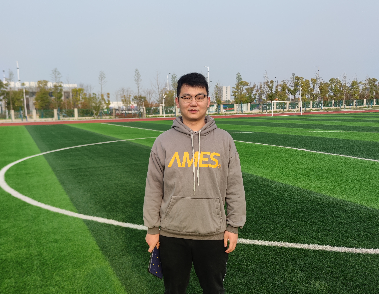
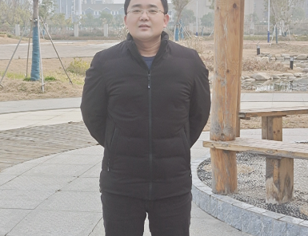
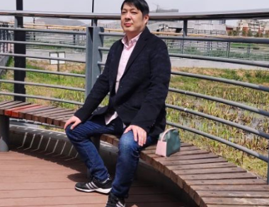
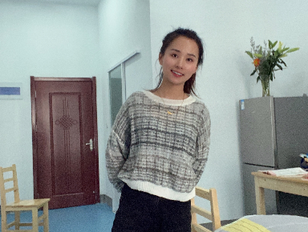
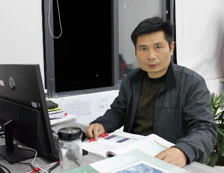

-
教师风采
-
班主任&英语老师

管军，中共党员，高级教师，马鞍山市优秀青年教师，所带班级多次被评为市级先进班集体，多篇论文、电教作品获市级一等奖。
-
数学老师

束子毅，二级教师，从事教育事业以来坚信：关心可以带领每位学生走过学习和生活中的每一个减区间，换来一个更美好的极大值。
-
语文老师

邢运欣，中国语言文学专业硕士研究生，主要研究方向为中国古代文学。
-
物理老师

徐国，中共党员，2014年毕业于安徽师范大学物理学专业，所带班级曾获市优秀红旗团支部称号！
-
化学老师
汪兰英，高级教师、本科、安徽省模范教师、市优秀班主任、市骨干教师、教学能手。 曾两次获得马鞍山市高中化学优质课二等奖、市精品课。 10多年一直从事班主任工作，所带班级曾多次获马鞍山市优秀班集体、五四红旗团支部称号。 曾获马鞍山市首届我最喜爱的人民教师50名候选人之一，市优秀青年教师。曾担任市级课题负责人， 撰写的论文被中国知网全文收录，荣获全国优秀教育教学论文“一等奖”， 所带学生在市化学竞赛中多次获奖，多次被评为校优秀教师、优秀班主任。
-
生物老师

谷士银，曾获得博望区先进个人、优秀班主任，优秀教师，优秀班集体，优秀红旗团支部，教坛新星等。
-
历史老师

魏荣刚，高级教师，大学本科学历。
-
政治老师

唐蓉，毕业于安徽师范大学，政治英语双学位毕业。爱岗敬业，关心热爱学生，深受学生喜欢，所带学生成绩优异。
-
地理老师

石军军，市优秀教师，区首届高中地理优质课大赛一等奖，市高中地理优质课大赛二等奖，所带班级荣获市“先进班集体”荣誉称号。
-
班主任&英语老师